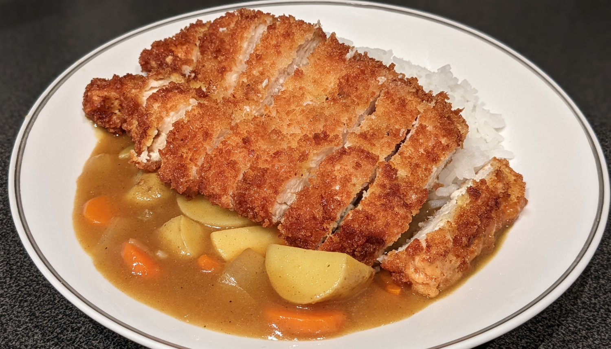

Katsu Curry

Author: RecipeTin Japan |
Cooked: February 4, 2023
Yields: 4 Servings | Prep Time: 15 Minutes | Cook Time: 40 Minutes
Ingredients
- 2 chicken breasts
- Salt and pepper
- Garlic and onion powder
- All-purpose flour
- 1 egg, beaten
- Panko breadcrumbs
- Vegetable oil to deep fry --------------------------
- 1 Tbs vegetable oil
- 1 medium white onion, sliced into 1/2" pieces
- 1 lb Yukon Gold potatoes (or other waxy potato), cut into 1/2" cubes
- 2 large carrots, cut into 1/4" thick pieces
- 3.5 c. water
- 1 tsp salt
- 1 curry block (we used S&B Golden Curry medium-hot, 92g)
- Rice, cooked (Jasmine)
Chicken Katsu
Curry
Directions
- Slice each breast in half horizontally (hamburger-style). Pound out the breast slices into an even thickness.
- Season all over with salt, pepper, garlic, and onion powder.
- Prepare three shallow bowls: one each for the flour, egg, and breadcrumbs. Place an additional bowl or tray next to the breadcrumbs.
- Working one fillet at a time, coat completely with flour, shake off excess, dredge in egg and allow excess to drip off, and finally coat completely in breadcrumbs making sure there are no bare spots.
- In a deep pan, heat about 1.5" of oil to 350°. Gently place 1-2 fillets in the pan and fry for about 3 minutes per side or until it is browned.
- Transfer to a plate or try lined with paper towels to drain excess oil. --------------------------
Chicken Katsu
- In a medium-sized pot, heat the oil over medium-high heat.
- Add onion and cook until the onion becomes soft, translucent, and the edges start to burn.
- Add potatoes and carrots and stir occasionally, cooking until the edges start to get cooked.
- Add water and salt and bring to a boil. Then reduce heat to medium-low and simmer until the vegetables are nearly cooked through (about 7 minutes).
- Break the curry block into pieces and add to the pot, stirring to incorporate.
- Reduce heat to low, cover with a lid, and cook until the curry block is completely dissolved (about 10 minutes) while stirring occasionally (and making sure that nothing is stuck to the bottom of the pot).
- Check the consistency of the sauce. If it is too thick, add some more water. If too thin, continue to cook without the lid.
- Serve with rice and even fukujinzuke if you know where to get some.
Curry
Additional Notes
- Start to fry the chicken shortly after adding the water to the vegetables.
- The 1 tsp salt in the curry may need to be adjusted.
- Season the flour and possibly use seasoned panko breadcrumbs.